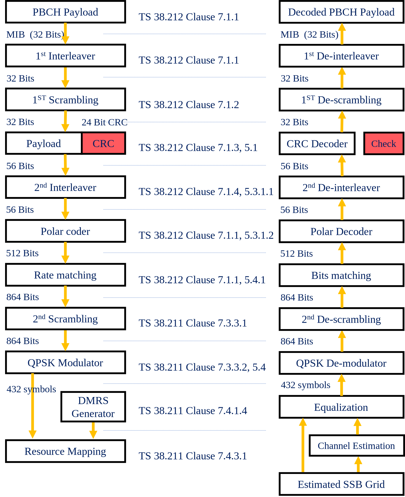

Physical Broadcast Channel (PBCH)
This module implements the physical broadcast channel. The implementation of these modules is based on [3GPPTS38211pbch].
{kind=link}
PBCH Transmitter
- class toolkit5G.PhysicalChannels.PBCH(carrierFreq, choiceBit, subCarrierSpacingCommon, DMRSTypeAPosition, controlResourceSet0, searchSpace0, cellBarred, intraFrequencyReselection, systemFrameNumber, ssbSubCarrierOffset, hrfBit, ssbIndex, cellID, nssbCandidatesInHrf)[source]
Generates the QPSK symbols processed by PBCH chain as per Section 7.3.2.5 of [3GPPTS38211pbch]. The PBCH symbols generated by the chain can be directly inserted into SSB Grid.
- Parameters
carrierFreq (number) – Defines the carrier frequency considered for simulation \(\in [0.5, 52.6]\) GHz.
choiceBit (number) – Defines the choice bit from MIB information \(\in \{0, 1\}\).
subCarrierSpacingCommon (number) – Defines subCarrierSpacingCommon information for SSB which \(\in \{15000, 30000\}\) for frequency range-1 (
carrierFreq< 6 GHz) and \(\in \{120000, 240000\}\) for frequency range-1 (6 GHz <carrierFreq< 52.6 GHz). Indicates the Subcarrier spacing for SIB1, Msg.2/4 for initial access and SI-messages.DMRSTypeAPosition (str) – Defines dmrs-TypeA-Position information in MIB. It is used to indicate position of (first) DL DM-RS. \(\in \{\text{"pos2", "pos3"}\}\)
controlResourceSet0 ((N,), int) – Defines common ControlResourceSet (CORESET). It is one of the most crucial information for UE to decode the SIB1.
searchSpace0 ((N,), int) – Defines searchSpace0 in MIB. It is one of the most crucial information for UE to decode the SIB1.
cellBarred (int) – Defines cellBarred in MIB \(\in \{0, 1\}\). This field indicates whether or not UEs in the cell are allowed to access the cell; ‘barred’ indicates, the UEs are not allowed to access the cell.
intraFrequencyReselection (int) – Defines intraFrequencyReselection in MIB \(\in \{0, 1\}\). This field controls cell selection/reselection to intra-frequency cells when the highest ranked cell is barred (as indicated by cellBarred) or treated as barred by the UE.
systemFrameNumber (int) – Defines system frame number \(\in \{0, 1, \dots, 1023\}\) requires 10 bits for representation. The 6 MSB bits of the 10-bit SFN are carried by MIB-IE from higher layers and the 4 LSB bits of the SFN are conveyed in the PBCH transport block as part of channel coding (i.e. outside the MIB encoding).
ssbSubCarrierOffset ((N,), int) – Defines \(\text{k}_{SSB}\) indicates the frequency domain offset between SSB and the overall resource block grid in number of subcarriers. For FR1, it takes 24 values \(\in \{0, 1, \dots, 23\}\) and for FR2 it takes 12 values \(\in \{0, 1, \dots, 11\}\). This field may indicate that this cell does not provide SIB1 and that there is hence no common CORESET. In this case, the field pdcch-ConfigSIB1 may indicate the frequency positions where the UE may (not) find a SS/PBCH with a control resource set and search space for SIB1
hrfBit (int) – Defines the half frame bit \(\in \{0, 1\}\). This bit is cleared (set to 0) if SSB is broadcasted in the first half-frame or set to 1 otherwise. This information is combined with SSB index for frame synchronization.
ssbIndex ((N,), int) – Defines the index of the SSB within SSB burst set \(\in \{0, 1, \dots, \text{L}_\text{max}-1\}\).
cellID (int) – Defines the cell-ID \(\in \{0, 1, \dots, 1007\}\).
nssbCandidatesInHrf (int) – Defines the maximum number of candidate SSBs (\(\text{L}_\text{max}\)) within an SS burst set. The values of this parameter depends upon the carrier frequency.
Important
The size of
controlResourceSet0,searchSpace0,ssbIndexandssbSubCarrierOffsetmust be consistent.- Input
No input required.
- Output
[N, 432], np.complex64 where N denotes the number of MIBs. Its value depends on size of
controlResourceSet0,searchSpace0,ssbSubCarrierOffset, andssbIndex.
- property chIL_bits
Defines the output of Channel Interleaver. This is passed as input to PBCH Scrambler.
- property encBits
Defines the output of Polar Encoder. This is passed as input to Sub Block Interleaver.
- property iILBits
Defines the output of Input Block Interleaver. This is passed as input to Polar Encoder.
- property ilBits
Defines the output of PBCH Interleaver. This is passed as input to PBCH Scrambler-1.
- property mib
Defines the object of MIB Generation!
- property payloadCRC
Defines the output of Cyclic Redundancy Check. This is passed as input to Input Block Interleaver.
- property payloadMIB
Defines the output of MIB Generator. This is passed as input to PBCH Interleaver.
- property rmBits
Defines the output of Bit Selection. This is passed as input to Channel Interleaver.
- property sBIL_bits
Defines the output of Sub Block Interleaver. This is passed as input to Bit Selection.
- property scr2bits
Defines the output of PBCH Scrambler-2. This is passed as input to QPSK Symbol Mapper.
- property scrBits
Defines the output of PBCH Scrambler-1. This is passed as input to Cyclic Redundancy Check.
PBCH Receiver
- class toolkit5G.PhysicalChannels.PBCHDecoder(carrierFreq, cellID, nssbCandidatesInHrf, ssbIndex, polarDecType, symbolDemapperType)[source]
Generates the QPSK symbols processed by PBCH chain as per Section 7.3.2.5 of [3GPPTS38211pbch]. The PBCH symbols generated by the chain can be directly inserted into SSB Grid.
- Parameters
carrierFreq (number) – Defines the carrier frequency considered for simulation \(\in [0.5, 52.6]\) GHz.
cellID (int) – Defines the cell-ID \(\in \{0, 1, \dots, 1007\}\).
nssbCandidatesInHrf (int) – Defines the maximum number of candidate SSBs (\(\text{L}_\text{max}\)) within an SS burst set. The values of this parameter depends upon the carrier frequency.
ssbIndex ((N,), int) – Defines the index of the SSB within SSB burst set \(\in \{0, 1, \dots, \text{L}_\text{max}-1\}\).
polarDecType (str) – Defines the Polar Decoder Type used in PBCH receiver chain.
symbolDemapperType (str) – Defines the Symbol Demapper Type used for demapping QPSK symbols.
- Input
[N, 432], np.complex64 where N denotes the number of MIBs to be recovered.
- Output
(MIBExtraction, crcCheck) where –
MIBExtractionisNoneif mibFlag isFalseand object of MIBExtraction class otherwise.crcCheckis (N, 1) boolean array where N is number of PBCH payloads.
- property channelDeInterleaverBits
Defines the output of Channel DeInterleaver. This is passed as input to Bit De-Selection.
- property crcCheck
Defines the output of CRC Decoder and indicates whether PBCH Payload bits are erroneous or not!
- property deCRCBits
Defines the output of CRC Decoder. It is passed as input to PBCH De-Interleaver.
- property deScrambledBits
Defines the output of De-Scrambler-1. This is passed as input to Cyclic Redundancy Check Decoder.
- property descrambled2LLRs
Defines the output of Descrambler-2. This is passed as input to Channel DeInterleaver.
- property inputDeinteleavedBits
Defines the output of Input Bit De-Interleaver. This is passed as input to De-Scrambler-1.
- property llr
Defines the Log Likelihood Ratio (LLR) (output of Demapper). This is passed as input to Descrambler-2.
- property mibRx
Defines the object of MIB Extraction!
- property pbchDeInterleavedBits
Defines the output of PBCH De-Interleaver. It is passed as input to MIB Extraction.
- property polarDecodedBits
Defines the output of Polar Decoder. This is passed as input to Input Bit De-Interleaver.
- property rateDematedBits
Defines the output of Bit De-Selection. This is passed as input to Sub block De-Interleaver.
- property subBlockDeinterleavedBits
Defines the output of Sub block De-Interleaver. This is passed as input to Polar Decoder.